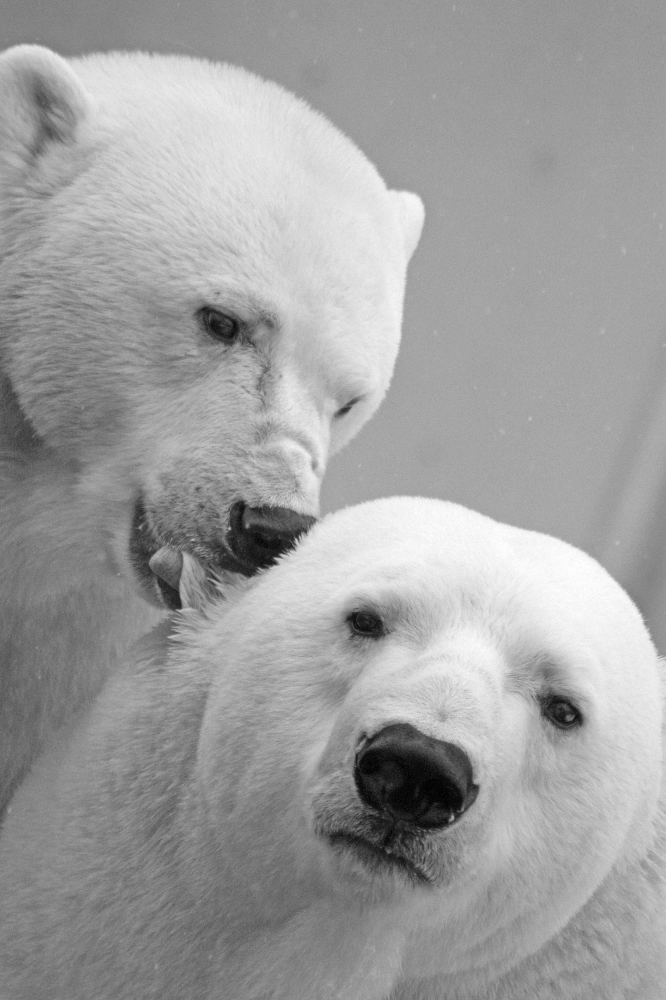
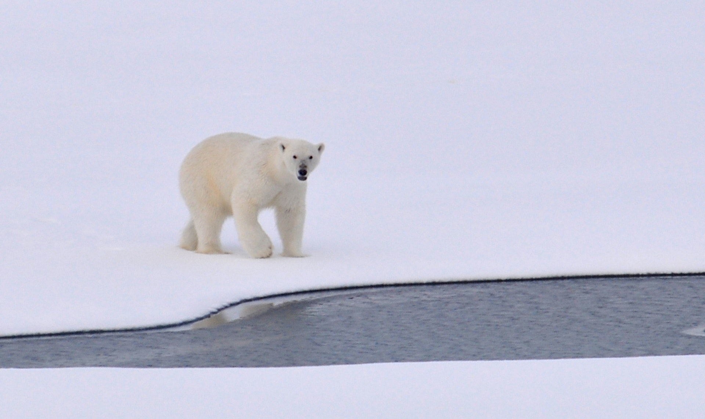

Polar Bear
 A Little Introduction...
Polar bears live in the Arctic, near the North Pole. They are amazing swimmers thanks to their large front paws, which work like paddles and are slightly webbed, they can even swim for hundreds of miles. Polar bears thick fur keeps heat in and covers a warming layer of fat while also working as camouflage. This is helpful when they are hunting their pray which are usually seals.